Chapter 18: Ordinary Differential Equations#
Topics Covered:
What an ODE is and how to think about it
Euler’s method: building intuition by stepping forward manually
scipy.integrate.solve_ivp: Python’s general-purpose ODE solverSystems of ODEs: multiple coupled equations
Stiff ODEs and choosing the right solver
Chemical engineering application: batch reactor and CSTR dynamics
Motivation: Why Do We Need ODEs?#
Many real processes evolve over time — not just at steady state. When a quantity changes continuously, the governing equation usually involves a derivative:
This says: the rate of change of concentration equals minus a rate constant times the current concentration. It is a first-order ODE.
Some familiar ChE examples:
Physical situation |
ODE |
|---|---|
First-order batch reaction |
\(\frac{dC_A}{dt} = -k C_A\) |
Newton’s law of cooling |
\(\frac{dT}{dt} = -\frac{UA}{mC_p}(T - T_\infty)\) |
Tank draining (Torricelli) |
\(\frac{dh}{dt} = -\frac{A_o}{A_t}\sqrt{2gh}\) |
CSTR start-up |
\(\frac{dC_A}{dt} = \frac{F}{V}(C_{A0} - C_A) - k C_A\) |
In all these cases we know the rate of change and want to find the trajectory — how the quantity evolves from an initial condition at \(t=0\).
Analytically, the first equation gives \(C_A(t) = C_{A0}\,e^{-kt}\). But most real ODEs have no closed-form solution. We need numerical methods.
import numpy as np
import matplotlib.pyplot as plt
from scipy.integrate import solve_ivp
18.1 What is an ODE?#
An ordinary differential equation (ODE) is an equation that relates an unknown function to its own rate of change (its derivative). Instead of asking “what is the value of \(y\)?”, an ODE asks “what is the rule by which \(y\) changes?”
Compare these two types of equations:
Type |
Example |
What it tells you |
|---|---|---|
Algebraic equation |
\(2x + 3 = 7\) |
The value of \(x\) directly |
ODE |
\(\frac{dC_A}{dt} = -k\,C_A\) |
How \(C_A\) changes over time |
The ODE does not tell you \(C_A\) directly — it tells you the slope at every point. To recover the actual trajectory \(C_A(t)\), you must integrate starting from a known starting point.
18.1.1 The Standard Form#
The general first-order ODE is written:
\(y(t)\) — the unknown function we want to find (concentration, temperature, height, …)
\(f(t, y)\) — a known expression for the rate of change (the right-hand side of the ODE)
\(y(t_0) = y_0\) — the initial condition: the value of \(y\) at the starting time \(t_0\)
The initial condition is essential. Without it, an ODE has infinitely many solutions — one for every possible starting value. With it, the solution is unique.
Analogy: Imagine you know a car’s velocity at every instant. That alone doesn’t tell you where the car is — you also need to know where it started. The initial condition is that starting position.
18.1.2 Order of an ODE#
The order of an ODE is the highest derivative that appears:
Order |
Form |
Example |
|---|---|---|
1st order |
\(\frac{dy}{dt} = f(t, y)\) |
First-order reaction: \(\frac{dC_A}{dt} = -k C_A\) |
2nd order |
\(\frac{d^2y}{dt^2} = f\!\left(t, y, \frac{dy}{dt}\right)\) |
Spring-mass: \(m\ddot{x} = -kx\) |
\(n\)th order |
involves \(\frac{d^n y}{dt^n}\) |
Higher-order dynamics |
Why first-order matters most: Any higher-order ODE can always be rewritten as a system of first-order ODEs by introducing new variables for each derivative. For example:
This means knowing how to solve first-order systems is enough to handle any ODE.
18.1.3 Solving an ODE = Integration#
Rearranging the standard form:
This is just integration — but the catch is that \(f\) depends on \(y(\tau)\), which is the very thing we are trying to find. This is why we need numerical methods: they break the circularity by marching forward in small steps, using the current known value of \(y\) to estimate the next one.
18.1.4 Verifying an Analytical Solution#
For simple ODEs, an analytical solution exists. Let’s verify the exponential decay solution:
To verify: differentiate the proposed solution and check it satisfies the ODE:
dC = -kC dt
1/C dC = -k dt
ln C = -kt + A C = exp(-kt + A) = exp(A)exp(-kt) = B exp(-kt)
at t=0, C = B = C0
C = C0 exp(-kt)
k = 0.3 # 1/min — first-order rate constant
C_A0 = 2.0 # mol/L — initial concentration
t = np.linspace(0, 10, 300)
C_A_exact = C_A0 * np.exp(-k * t)
fig, ax = plt.subplots(figsize=(7, 4))
ax.plot(t, C_A_exact, 'steelblue', linewidth=2.5, label=r'$C_A(t) = C_{A0}\,e^{-kt}$')
ax.axhline(C_A0, color='gray', linestyle='--', linewidth=1, label=f'$C_{{A0}}$ = {C_A0} mol/L')
ax.set_xlabel('Time (min)', fontsize=12)
ax.set_ylabel('Concentration (mol/L)', fontsize=12)
ax.set_title('First-Order Batch Reaction: Analytical Solution', fontsize=13)
ax.legend(fontsize=11)
ax.grid(True, alpha=0.3)
plt.tight_layout()
plt.show()
print(f"At t = 5 min: C_A = {C_A0 * np.exp(-k*5):.4f} mol/L")
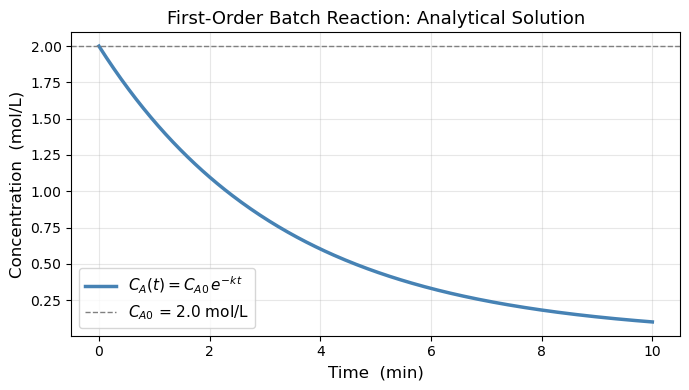
At t = 5 min: C_A = 0.4463 mol/L
18.2 Euler’s Method#
Euler’s method produces approximate solution values at evenly-spaced times:
where \(h\) is the step size. Starting from the known initial condition \(y_0 = y(t_0)\), each new value is computed from the previous one using the ODE right-hand side:
The idea is simple: at each point we know the slope \(f(t_{n-1}, y_{n-1})\), so we take a straight-line step of length \(h\) in the direction of that slope.
The visualization below shows the first two steps in detail — with \(h\), the step \(h\,f(t_0, y_0)\), and the error of \(y_1\) all labeled.
Think about it: Looking at the picture, what would you do to reduce the error?
# ── Euler's method: two-step annotated diagram ───────────────────────────────
import numpy as np
from matplotlib import pyplot as plt
k = 0.3
y0 = 0.5
t0 = 0.0
h = 2.0 # large so labels are clearly visible
def f(t, y): return k * y # ODE right-hand side (growing)
def exact(t): return y0 * np.exp(k * t)
# --- compute the two Euler steps ---
t1, y1 = t0 + h, y0 + h * f(t0, y0)
t2, y2 = t0 + 2*h, y1 + h * f(t1, y1)
# --- exact curve ---
t_fine = np.linspace(-0.1, t0 + 2*h + 0.6, 400)
y_fine = exact(t_fine)
fig, ax = plt.subplots(figsize=(9, 5))
ax.plot(t_fine, y_fine, 'k-', lw=2.5, label='Exact solution', zorder=3)
# ── Step 1: y0 → y1 ──────────────────────────────────────────────────────────
slope0 = f(t0, y0) # f(t0, y0)
step0 = h * slope0 # h·f(t0, y0) — vertical rise
# tangent arrow y0 → y1
ax.annotate('', xy=(t1, y1), xytext=(t0, y0),
arrowprops=dict(arrowstyle='->', color='steelblue', lw=2.2,
mutation_scale=16))
# label the Euler points
ax.plot(t0, y0, 'o', color='steelblue', ms=9, zorder=5)
ax.plot(t1, y1, 'o', color='steelblue', ms=9, zorder=5)
ax.text(t0 - 0.08, y0 + 0.07, '$y_0$', fontsize=12, ha='right', color='steelblue')
ax.text(t1 + 0.06, y1 + 0.07, '$y_1$', fontsize=12, color='steelblue')
# ── h bracket (horizontal) ────────────────────────────────────────────────────
bracket_y = y0 - 0.28
ax.annotate('', xy=(t1, bracket_y), xytext=(t0, bracket_y),
arrowprops=dict(arrowstyle='<->', color='gray', lw=1.5))
ax.text((t0 + t1)/2, bracket_y - 0.13, '$h$',
ha='center', fontsize=12, color='gray')
# ── h·f(t0,y0) bracket (vertical) ────────────────────────────────────────────
bx = t1 + 0.12
ax.annotate('', xy=(bx, y1), xytext=(bx, y0),
arrowprops=dict(arrowstyle='<->', color='steelblue', lw=1.5))
ax.text(bx + 0.06, (y0 + y1)/2,
r'$h\,f(t_0, y_0)$', fontsize=10, color='steelblue', va='center')
# ── error of y1 ──────────────────────────────────────────────────────────────
y1_exact = exact(t1)
ex = t1 + 0.55
ax.plot([t1, t1], [y1, y1_exact], ':', color='tomato', lw=2, zorder=4)
ax.plot(t1, y1_exact, 's', color='tomato', ms=8, zorder=5,
label='Exact at $t_1$, $t_2$')
ax.annotate('', xy=(ex, y1_exact), xytext=(ex, y1),
arrowprops=dict(arrowstyle='<->', color='tomato', lw=1.5))
ax.text(ex + 0.06, (y1 + y1_exact)/2,
'error of $y_1$', fontsize=10, color='tomato', va='center')
# ── Step 2: y1 → y2 ──────────────────────────────────────────────────────────
ax.annotate('', xy=(t2, y2), xytext=(t1, y1),
arrowprops=dict(arrowstyle='->', color='darkorange', lw=2.2,
mutation_scale=16))
ax.plot(t2, y2, 'o', color='darkorange', ms=9, zorder=5)
ax.plot(t2, exact(t2), 's', color='tomato', ms=8, zorder=5)
ax.text(t2 + 0.06, y2 + 0.07, '$y_2$', fontsize=12, color='darkorange')
# error of y2 (dotted line only, unlabeled to keep figure clean)
ax.plot([t2, t2], [y2, exact(t2)], ':', color='tomato', lw=2, zorder=4)
# ── step labels inside arrows ────────────────────────────────────────────────
ax.text((t0+t1)/2, (y0+y1)/2 + 0.10,
r'$y_1 = y_0 + h\,f(t_0,y_0)$',
fontsize=9.5, color='steelblue', ha='center',
bbox=dict(fc='white', ec='none', pad=1))
ax.text((t1+t2)/2, (y1+y2)/2 + 0.10,
r'$y_2 = y_1 + h\,f(t_1,y_1)$',
fontsize=9.5, color='darkorange', ha='center',
bbox=dict(fc='white', ec='none', pad=1))
# ── axes and legend ───────────────────────────────────────────────────────────
ax.set_xlabel('Time (min)', fontsize=13)
ax.set_ylabel('y', fontsize=13)
ax.set_title("Euler's Method",
fontsize=13)
ax.legend(fontsize=10, loc='upper right')
ax.set_xlim(-0.2, t0 + 2*h + 1.4)
ax.set_ylim(0.0, 2.2)
ax.grid(True, alpha=0.25)
plt.tight_layout()
plt.show()
print(f"y0 = {y0:.4f} (exact: {exact(t0):.4f})")
print(f"y1 = {y1:.4f} (exact: {exact(t1):.4f}, error = {abs(y1 - exact(t1)):.4f})")
print(f"y2 = {y2:.4f} (exact: {exact(t2):.4f}, error = {abs(y2 - exact(t2)):.4f})")
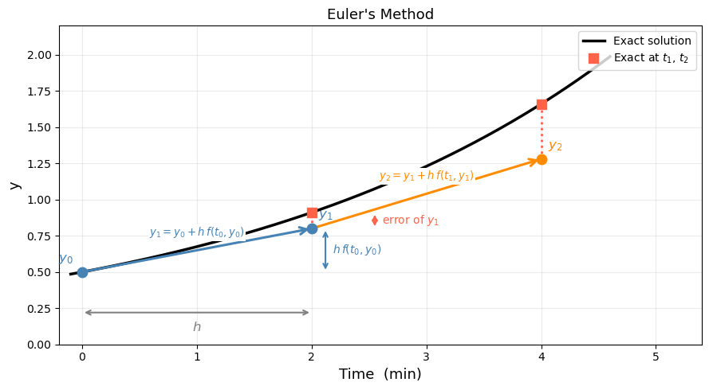
y0 = 0.5000 (exact: 0.5000)
y1 = 0.8000 (exact: 0.9111, error = 0.1111)
y2 = 1.2800 (exact: 1.6601, error = 0.3801)
# ── Euler's method for dC_A/dt = -k*C_A ─────────────────────────────────────
def dCA_dt(t, C_A):
return -k * C_A # f(t, y) — the ODE right-hand side
def euler(f, y0, t_span, h):
"""Simple Euler integrator. Returns (t_array, y_array)."""
t0, tf = t_span
t_arr = [t0]
y_arr = [y0]
t_cur, y_cur = t0, y0
while t_cur < tf - 1e-10:
h_step = min(h, tf - t_cur) # don't overshoot the end
y_cur = y_cur + h_step * f(t_cur, y_cur)
t_cur = t_cur + h_step
t_arr.append(t_cur)
y_arr.append(y_cur)
return np.array(t_arr), np.array(y_arr)
# Compare three step sizes
t_exact = np.linspace(0, 10, 400)
C_exact = C_A0 * np.exp(-k * t_exact)
fig, axes = plt.subplots(1, 2, figsize=(12, 4))
ax = axes[0]
ax.plot(t_exact, C_exact, 'k-', linewidth=2, label='Exact')
colors = ['tomato', 'darkorange', 'seagreen']
for h_val, color in zip([2.0, 1.0, 0.5], colors):
t_eu, y_eu = euler(dCA_dt, C_A0, (0, 10), h_val)
ax.plot(t_eu, y_eu, 'o--', color=color, markersize=4,
label=f'Euler h={h_val}')
ax.set_xlabel('Time (min)')
ax.set_ylabel('$C_A$ (mol/L)')
ax.set_title("Euler's Method: Effect of Step Size")
ax.legend(fontsize=9)
ax.grid(True, alpha=0.3)
# Error vs step size
ax2 = axes[1]
h_vals = [2.0, 1.0, 0.5, 0.25, 0.1, 0.05, 0.01]
errors = []
for h_val in h_vals:
_, y_eu = euler(dCA_dt, C_A0, (0, 10), h_val)
C_ref = C_A0 * np.exp(-k * 10)
errors.append(abs(y_eu[-1] - C_ref))
ax2.loglog(h_vals, errors, 'o-', color='steelblue', markersize=6, label='Euler error')
# Reference slope-1 line
h_ref = np.array([0.01, 2.0])
ax2.loglog(h_ref, 0.5 * h_ref, 'k--', label='slope = 1 (1st order)')
ax2.set_xlabel('Step size $h$')
ax2.set_ylabel('Global error at $t=10$')
ax2.set_title('Euler Convergence: $O(h)$')
ax2.legend(fontsize=10)
ax2.grid(True, which='both', alpha=0.3)
plt.tight_layout()
plt.show()
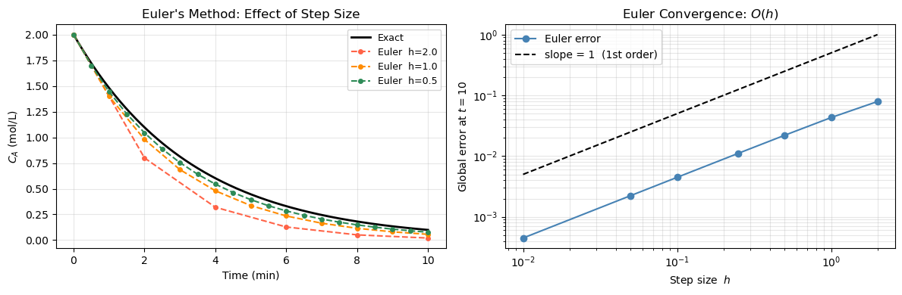
18.3 Solving ODEs in Python with solve_ivp#
In 18.2 we stepped through Euler’s method by hand. In practice we hand the ODE to scipy.integrate.solve_ivp, which does the same march-forward idea but with a smarter algorithm under the hood. This section shows the full workflow in three steps:
Write the ODE as a Python function
Call
solve_ivpand read the resultUnderstand what the solver is doing internally
18.3.1 Step 1 — Write the ODE as a Python function#
solve_ivp expects the right-hand side \(f(t, y)\) as a function with this exact signature:
def rhs(t, y):
# t : current time (scalar)
# y : current state — always a list/array, one entry per variable
# return : list of derivatives, same length as y
return [dy_dt]
Two rules that trip up most beginners:
yis always a list, even for a single variable — unpack it withy[0]Always return a list (never a bare scalar)
# ── Step 1: writing ODE functions ────────────────────────────────────────────
# Example A: single variable
# dy/dt = k*y → y = [C_A], y[0] = C_A
k = 0.3
def rhs_single(t, y):
C_A = y[0] # unpack
return [k * C_A] # return a list
print("Example A — RHS at t=0, C_A=1.0:", rhs_single(0, [1.0]))
# Expected: [0.3]
# Example B: two coupled variables
# dC_A/dt = -k1 * C_A
# dC_B/dt = k1 * C_A - k2 * C_B
# y = [C_A, C_B]
k1, k2 = 0.4, 0.1
def rhs_system(t, y):
C_A, C_B = y # unpack both
return [-k1 * C_A,
k1 * C_A - k2 * C_B]
print("Example B — RHS at t=0, [C_A, C_B]=[1, 0]:", rhs_system(0, [1.0, 0.0]))
# Expected: [-0.4, 0.4]
Example A — RHS at t=0, C_A=1.0: [0.3]
Example B — RHS at t=0, [C_A, C_B]=[1, 0]: [-0.4, 0.4]
18.3.2 Step 2 — Call solve_ivp and read the result#
from scipy.integrate import solve_ivp
sol = solve_ivp(fun, t_span, y0, t_eval=..., args=(...))
Argument |
What to pass |
Notes |
|---|---|---|
|
your |
must accept scalar |
|
|
integration interval |
|
|
one value per ODE variable |
|
|
times where output is saved |
|
|
extra parameters forwarded to |
The returned object sol contains:
Attribute |
Shape |
Meaning |
|---|---|---|
|
|
time points |
|
|
solution — row |
|
bool |
|
sol.y[0] # first variable over all time points
sol.y[0, -1] # final value of first variable
sol.y[1] # second variable (if system)
# ── Step 2: calling solve_ivp and reading the result ─────────────────────────
from scipy.integrate import solve_ivp
# ODE: dC_A/dt = k * C_A, C_A(0) = 0.5
k = 0.3
def rhs(t, y):
C_A = y[0] # unpack
return [k * C_A] # return a list
sol = solve_ivp(
fun = rhs,
t_span = (0, 10),
y0 = [0.5],
t_eval = np.linspace(0, 10, 6)
)
print("Converged :", sol.success)
print("Time pts :", np.round(sol.t, 2))
print("C_A values:", np.round(sol.y[0], 4))
print()
print("Reading the output:")
print(f" sol.y[0] → all C_A values : {np.round(sol.y[0], 3)}")
print(f" sol.y[0, -1] → final C_A : {sol.y[0, -1]:.4f}")
print(f" exact C_A(10) = 0.5·e^3 : {0.5 * np.exp(0.3*10):.4f}")
# Quick plot
t_fine = np.linspace(0, 10, 300)
fig, ax = plt.subplots(figsize=(7, 3.5))
ax.plot(t_fine, 0.5 * np.exp(k * t_fine), 'k-', lw=2, label='Exact')
ax.plot(sol.t, sol.y[0], 'o', color='steelblue', ms=9, zorder=5,
label='solve_ivp output')
ax.set_xlabel('Time (min)', fontsize=12)
ax.set_ylabel('$C_A$ (mol/L)', fontsize=12)
ax.set_title('solve_ivp result on dC_A/dt = k·C_A', fontsize=12)
ax.legend(fontsize=10)
ax.grid(True, alpha=0.3)
plt.tight_layout()
plt.show()
Converged : True
Time pts : [ 0. 2. 4. 6. 8. 10.]
C_A values: [ 0.5 0.9111 1.6599 3.0252 5.5099 10.0427]
Reading the output:
sol.y[0] → all C_A values : [ 0.5 0.911 1.66 3.025 5.51 10.043]
sol.y[0, -1] → final C_A : 10.0427
exact C_A(10) = 0.5·e^3 : 10.0428
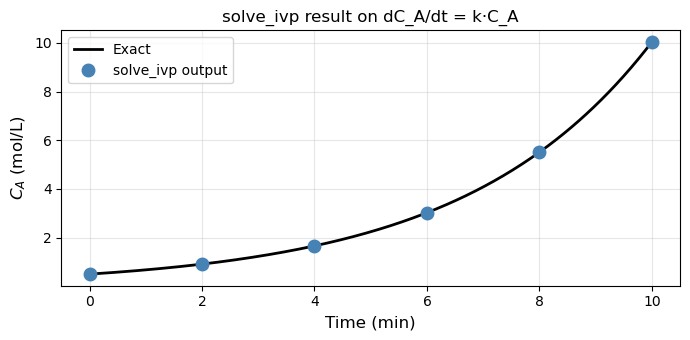
18.3.3 (Optional) Step 3 — What is solve_ivp doing under the hood?#
The default method 'RK45' works exactly like Euler — it marches forward from \(y_0\) — but instead of one slope evaluation per step it takes four, placed at the start, two midpoints, and the end of the interval, then combines them with optimal weights:
where each \(k_i\) is a slope evaluated at a different point within the step. This weighted average tracks the curve far better than Euler’s single slope.
Why RK45 instead of plain RK4? The “45” means it computes two estimates (4th-order and 5th-order) at every step. Their difference is used as an error gauge: if the error is too large, the step is rejected and retried with smaller \(h\); if the error is tiny, the next step uses larger \(h\). You never have to choose \(h\) — the solver adapts it automatically.
Method |
Error order |
Halving \(h\) reduces error by |
Step size |
|---|---|---|---|
Euler |
\(O(h)\) |
2× |
fixed |
RK4 |
\(O(h^4)\) |
16× |
fixed |
RK45 |
adaptive |
controlled by |
automatic |
rtol and atol are the two tolerances that tell the solver how accurate to be:
rtol=1e-3(default) — relative tolerance: error / |y| ≤ 0.001 at each stepatol=1e-6(default) — absolute tolerance: guards against issues when y ≈ 0
For most ChE problems the defaults are fine. Tighten to rtol=1e-6, atol=1e-9 when you need high-fidelity results (e.g. stiff reactors, phase portraits).
# ── Step 3: Euler vs solve_ivp — same ODE, same number of points ─────────────
k = 0.3
y0_ = 0.5
def rhs_grow(t, y): return [k * y[0]]
def euler_solve(h, t_end=10):
ts, ys = [0.0], [y0_]
while ts[-1] < t_end - 1e-10:
hh = min(h, t_end - ts[-1])
ys.append(ys[-1] + hh * k * ys[-1])
ts.append(ts[-1] + hh)
return np.array(ts), np.array(ys)
t_fine = np.linspace(0, 10, 400)
y_exact = y0_ * np.exp(k * t_fine)
fig, axes = plt.subplots(1, 2, figsize=(12, 4))
# Left: trajectory comparison
ax = axes[0]
ax.plot(t_fine, y_exact, 'k-', lw=2.5, label='Exact')
for h_val, color, ls in [(2.0, 'tomato', '--'), (0.5, 'darkorange', '-.')]:
te, ye = euler_solve(h_val)
ax.plot(te, ye, color=color, ls=ls, lw=1.8, marker='o', ms=4,
label=f'Euler h={h_val} ({len(te)-1} steps)')
sol_rk = solve_ivp(rhs_grow, (0, 10), [y0_], t_eval=np.linspace(0, 10, 200))
ax.plot(sol_rk.t, sol_rk.y[0], 's', color='steelblue', ms=4, markevery=15,
label=f'RK45 ({sol_rk.nfev} evals, adaptive h)')
ax.set_xlabel('Time (min)', fontsize=12)
ax.set_ylabel('$C_A$ (mol/L)', fontsize=12)
ax.set_title('Euler vs RK45: trajectory', fontsize=12)
ax.legend(fontsize=9)
ax.grid(True, alpha=0.3)
# Right: error vs step size
ax2 = axes[1]
h_vals = np.array([2.0, 1.0, 0.5, 0.25, 0.1, 0.05])
y_ref = y0_ * np.exp(k * 10)
euler_errs = [abs(euler_solve(hv)[1][-1] - y_ref) for hv in h_vals]
ax2.loglog(h_vals, euler_errs, 'o-', color='tomato', lw=2, label='Euler global error')
h_ref = np.array([h_vals[-1], h_vals[0]])
ax2.loglog(h_ref, 0.08 * h_ref, 'k--', lw=1.2, label='slope = 1 (1st order)')
rk_err = abs(sol_rk.y[0, -1] - y_ref)
ax2.axhline(rk_err, color='steelblue', lw=2, ls=':', label=f'RK45 error ≈ {rk_err:.1e}')
ax2.set_xlabel('Step size $h$ (Euler only)', fontsize=12)
ax2.set_ylabel('Global error at $t=10$', fontsize=12)
ax2.set_title('Error comparison', fontsize=12)
ax2.legend(fontsize=9)
ax2.grid(True, which='both', alpha=0.3)
plt.tight_layout()
plt.show()
print(f"Euler h=2.0 error: {abs(euler_solve(2.0)[1][-1] - y_ref):.4f}")
print(f"Euler h=0.5 error: {abs(euler_solve(0.5)[1][-1] - y_ref):.4f}")
print(f"RK45 error: {rk_err:.2e} (with {sol_rk.nfev} function evaluations)")
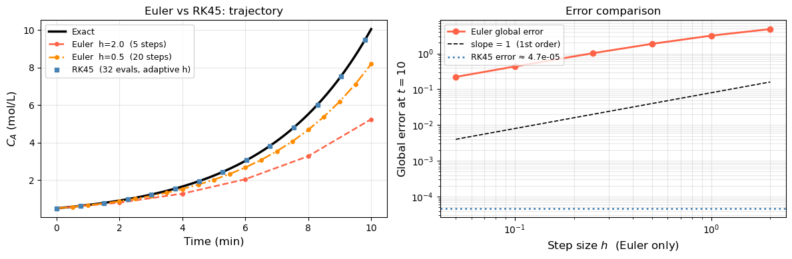
Euler h=2.0 error: 4.7999
Euler h=0.5 error: 1.8595
RK45 error: 4.72e-05 (with 32 function evaluations)
18.3.4 Passing Parameters with args#
When your ODE contains physical parameters (rate constants, temperatures, …), pass them via the args keyword instead of using global variables:
def rhs(t, y, k): # k is an extra argument
return [k * y[0]]
sol = solve_ivp(rhs, (0, 10), [0.5], args=(0.3,))
# ^^^^^ tuple — note the trailing comma!
Common mistake:
args=(k)is just parentheses aroundk, not a tuple. Writeargs=(k,)with a trailing comma.
This makes the function reusable — you can loop over parameter values without redefining rhs each time.
# ── 18.3.4 args: parameter sweep without redefining the function ─────────────
# dy/dt = k*y → y = [C_A], y[0] = C_A
# k = 0.3
# def rhs_single(t, y):
# C_A = y[0] # unpack
# return [k * C_A] # return a list
def rhs_param(t, y, k):
return [k * y[0]]
t_eval = np.linspace(0, 10, 300)
fig, ax = plt.subplots(figsize=(7, 4))
for k_val, color in zip([0.1, 0.2, 0.3, 0.5], ['steelblue', 'seagreen', 'darkorange', 'tomato']):
sol = solve_ivp(rhs_param, (0, 10), [0.5], args=(k_val,), t_eval=t_eval)
ax.plot(sol.t, sol.y[0], color=color, lw=2, label=f'k = {k_val} min\u207b\xb9')
ax.set_xlabel('Time (min)', fontsize=12)
ax.set_ylabel('$C_A$ (mol/L)', fontsize=12)
ax.set_title('Parameter sweep using args=(k,)', fontsize=12)
ax.legend(fontsize=10)
ax.grid(True, alpha=0.3)
plt.tight_layout()
plt.show()
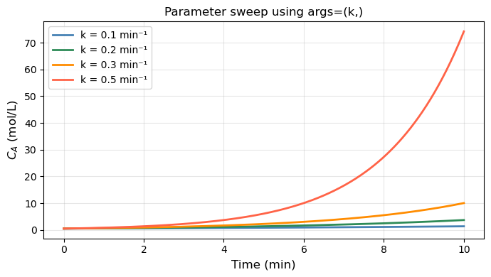
18.4 Systems of ODEs#
A system of ODEs is a set of two or more differential equations that are coupled — the rate of change of each variable depends on the current values of the other variables. Instead of tracking one unknown function \(y(t)\), we track a vector of unknowns \(\mathbf{y}(t) = [y_1, y_2, \ldots, y_n]\), each with its own equation:
In Python, y is a list/array and your rhs function returns a list of the same length — one derivative per variable.
Two common sources of systems in ChE:
Multiple species — material balances on \(n\) components each give one ODE, coupled through reaction rates.
Higher-order ODEs — a single \(n\)th-order ODE is rewritten as \(n\) first-order ODEs by introducing new state variables for each derivative.
solve_ivp handles systems exactly like single ODEs: pass the full y0 vector and the rhs function that returns a vector of the same length.
18.4.1 Consecutive Reactions: A → B → C#
A classic ChE scenario: reactant A converts to intermediate B, which then converts to product C.
Material balances (liquid phase, constant volume):
Three equations, three unknowns. y = [C_A, C_B, C_C].
Note that \(C_A + C_B + C_C = \text{const}\) (total moles conserved) — a good check for correctness.
# ── Consecutive reactions A → B → C ──────────────────────────────────────────
k1 = 0.4 # 1/min (A → B)
k2 = 0.1 # 1/min (B → C)
def consecutive_rxn(t, y, k1, k2):
C_A, C_B, C_C = y
dCA = -k1 * C_A
dCB = k1 * C_A - k2 * C_B
dCC = k2 * C_B
return [dCA, dCB, dCC]
t_eval = np.linspace(0, 20, 400)
sol = solve_ivp(consecutive_rxn,
t_span=(0, 20),
y0=[1.0, 0.0, 0.0], # [C_A0, C_B0, C_C0] in mol/L
args=(k1, k2),
t_eval=t_eval)
# Check mass conservation
total = sol.y[0] + sol.y[1] + sol.y[2]
print(f"Mass balance check — max deviation from 1.0: {np.max(np.abs(total - 1.0)):.2e}")
# Find time of maximum C_B
idx_max = np.argmax(sol.y[1])
t_max_B = sol.t[idx_max]
print(f"Maximum C_B = {sol.y[1, idx_max]:.4f} mol/L at t = {t_max_B:.2f} min")
fig, ax = plt.subplots(figsize=(8, 4))
ax.plot(sol.t, sol.y[0], 'steelblue', linewidth=2.5, label='$C_A$ (reactant)')
ax.plot(sol.t, sol.y[1], 'darkorange', linewidth=2.5, label='$C_B$ (intermediate)')
ax.plot(sol.t, sol.y[2], 'seagreen', linewidth=2.5, label='$C_C$ (product)')
ax.axvline(t_max_B, color='gray', linestyle='--', linewidth=1,
label=f'$C_B$ max at t={t_max_B:.1f} min')
ax.set_xlabel('Time (min)', fontsize=12)
ax.set_ylabel('Concentration (mol/L)', fontsize=12)
ax.set_title(r'Consecutive Reactions: A $\rightarrow$ B $\rightarrow$ C', fontsize=13)
ax.legend(fontsize=10)
ax.grid(True, alpha=0.3)
plt.tight_layout()
plt.show()
Mass balance check — max deviation from 1.0: 4.44e-16
Maximum C_B = 0.6299 mol/L at t = 4.61 min
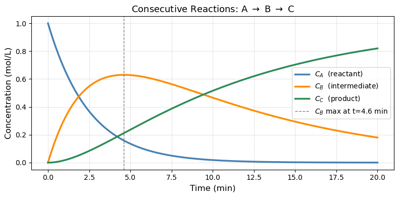
18.4.2 Second-Order ODE: Controlled Tank Level#
The situation: A liquid tank has an inlet controlled by a valve, and the goal is to hold the tank level \(h\) at a desired setpoint \(h_{ss}\). A sensor measures the current level and sends an error signal to the valve: if \(h\) is too low, open the valve more; if too high, close it. This feedback loop is the controller.
The valve, however, has mechanical inertia — a physical plug with mass and a spring that resists sudden motion. Because of this inertia, the valve doesn’t respond instantly to the error signal: it accelerates, then decelerates as it approaches the commanded position. This lag couples the valve’s velocity into the level dynamics, introducing a second derivative and giving the system second-order behavior.
Deriving the ODE — step by step
Step 1: Tank material balance.
The rate of change of liquid volume equals flow in minus flow out. Dividing by the cross-sectional area \(A_t\):
We treat \(F_{out}\) as constant (fixed downstream resistance), so only \(F_{in}\) varies.
Step 2: Valve force balance.
The valve has a physical plug with mass \(m_v\) attached to a spring (\(k_s\)) and subject to friction (\(b\)). When the controller sees a level error \((h_{ss} - h)\), it pushes the plug with force \(K_c(h_{ss} - h)\). Newton’s second law on the plug:
where \(x\) is the plug displacement from its neutral position.
Step 3: Link valve position to flow.
Flow through the valve is proportional to how far the plug is open:
Substitute into the force balance (replacing \(x\) with \(F_{in}/\alpha\) and absorbing \(\alpha\) into a new gain \(\tilde K\)):
Step 4: Substitute the material balance.
From Step 1, \(F_{in} = A_t \frac{dh}{dt} + F_{out}\). Since \(F_{out}\) is constant, \(\dot{F}_{in} = A_t \ddot{h}\) and \(\ddot{F}_{in} = A_t \dddot{h}\)… but that gives a third-order equation. Instead, we close the loop at steady state: at steady state \(h = h_{ss}\), \(\dot h = 0\), so \(F_{in} = F_{out}\). Writing the deviation from steady state and combining the tank and valve equations into one expression in \(h\) only yields:
Step 5: Define standard parameters.
Group the physical constants into two dimensionless/dimensional quantities:
Then \(\frac{m_v}{k_s} = \tau^2\) and \(\frac{b}{k_s} = \frac{2\zeta\tau^2}{\tau} \cdot \frac{1}{1} = 2\zeta\tau\). The ODE becomes the standard second-order closed-loop form:
Parameter |
Formula |
Physical meaning |
|---|---|---|
\(\tau = \sqrt{m_v/k_s}\) |
time constant (min) |
How fast the valve naturally oscillates |
\(\zeta = b/(2\sqrt{m_v k_s})\) |
damping ratio (–) |
How much friction damps the valve motion |
What \(\zeta\) controls:
\(\zeta\) |
Valve character |
Level response |
|---|---|---|
\(\zeta < 1\) |
Lightly damped (slippery valve) |
Overshoots \(h_{ss}\), oscillates before settling |
\(\zeta = 1\) |
Critically damped |
Reaches \(h_{ss}\) as fast as possible, no overshoot |
\(\zeta > 1\) |
Heavily damped (sluggish valve) |
Creeps slowly to \(h_{ss}\), no overshoot |
The simulation below shows a step change: the tank starts empty (\(h = 0\), valve at rest) and the setpoint jumps to \(h_{ss} = 1\) m at \(t = 0\).
Rewrite as a first-order system for solve_ivp by letting \(y_1 = h\) and \(y_2 = \frac{dh}{dt}\):
import matplotlib.pyplot as plt
import matplotlib.patches as mpatches
fig, ax = plt.subplots(figsize=(6, 7.5))
ax.set_xlim(0, 10)
ax.set_ylim(0, 13)
ax.set_aspect('equal')
ax.axis('off')
# ── Tank walls (three sides, open top) ───────────────────────────────────────
tank_l, tank_r = 2.5, 7.5
tank_bot, tank_top = 2.0, 8.5
ax.plot([tank_l, tank_l, tank_r, tank_r],
[tank_top, tank_bot, tank_bot, tank_top],
'k-', linewidth=2.5)
# ── Liquid fill ───────────────────────────────────────────────────────────────
liquid_h = 5.5
ax.add_patch(mpatches.Rectangle(
(tank_l, tank_bot), tank_r - tank_l, liquid_h - tank_bot,
facecolor='#add8e6', edgecolor='none', alpha=0.7, zorder=1))
ax.plot([tank_l, tank_r], [liquid_h, liquid_h], 'b-', linewidth=1.5)
# ── h arrow and label ─────────────────────────────────────────────────────────
ax.annotate('', xy=(tank_l - 0.35, liquid_h), xytext=(tank_l - 0.35, tank_bot),
arrowprops=dict(arrowstyle='<->', color='navy', lw=1.4))
ax.text(tank_l - 0.9, (liquid_h + tank_bot) / 2, '$h$',
ha='center', va='center', fontsize=13, color='navy')
# ── Setpoint dashed line ──────────────────────────────────────────────────────
ax.plot([tank_l, tank_r], [7.0, 7.0], 'k--', linewidth=1.2, dashes=(5, 3))
ax.text(tank_r + 0.2, 7.0, '$h_{ss}$', va='center', fontsize=11)
# ── Inlet pipe (vertical, enters from top) ────────────────────────────────────
pipe_x = 3.8
ax.plot([pipe_x, pipe_x], [tank_top, 11.3], 'k-', linewidth=3)
# ── Valve symbol (bowtie) ─────────────────────────────────────────────────────
vx, vy, vs = pipe_x, 10.4, 0.38
ax.add_patch(plt.Polygon(
[[vx - vs, vy + vs], [vx + vs, vy + vs], [vx, vy]],
closed=True, facecolor='dimgray', edgecolor='k', linewidth=1.5, zorder=4))
ax.add_patch(plt.Polygon(
[[vx - vs, vy - vs], [vx + vs, vy - vs], [vx, vy]],
closed=True, facecolor='dimgray', edgecolor='k', linewidth=1.5, zorder=4))
ax.text(vx + 0.65, vy, 'Valve\n($m_v$, $k_s$, $b$)',
va='center', fontsize=9, color='dimgray')
# Flow arrow above valve
ax.annotate('', xy=(pipe_x, vy + vs + 0.05), xytext=(pipe_x, 11.8),
arrowprops=dict(arrowstyle='->', color='steelblue', lw=2))
ax.text(pipe_x + 0.25, 11.65, '$F_{in}(t)$', fontsize=10, va='top', color='steelblue')
# ── Outlet pipe (bottom center) ───────────────────────────────────────────────
out_x = 5.0
ax.plot([out_x, out_x], [tank_bot, 0.5], 'k-', linewidth=3)
ax.annotate('', xy=(out_x, 0.1), xytext=(out_x, 0.9),
arrowprops=dict(arrowstyle='->', color='steelblue', lw=2))
ax.text(out_x + 0.25, 0.35, '$F_{out}$', fontsize=10, va='center', color='steelblue')
# ── Level sensor (circle on tank wall) ───────────────────────────────────────
sx = tank_r + 0.15
ax.plot([sx, sx], [tank_bot, tank_top], color='gray', linewidth=1, linestyle=':')
ax.add_patch(mpatches.Circle((sx, liquid_h), 0.22,
facecolor='gold', edgecolor='k', linewidth=1.5, zorder=5))
ax.text(sx + 0.55, liquid_h, 'Sensor', fontsize=9, va='center')
# ── Error signal arrow (sensor → valve) ──────────────────────────────────────
ax.annotate('', xy=(vx + vs + 0.05, vy),
xytext=(sx - 0.22, liquid_h + 0.1),
arrowprops=dict(arrowstyle='->', color='darkorange', lw=1.4,
linestyle='dashed',
connectionstyle='arc3,rad=-0.35'))
ax.text(7.4, 9.2, 'error\n$(h_{ss}-h)$',
fontsize=8, color='darkorange', ha='center')
# ── Tank label ────────────────────────────────────────────────────────────────
ax.text(5.0, 1.2, 'Tank ($A_t$)', ha='center', fontsize=10,
style='italic', color='#333')
ax.set_title('Liquid Tank with Valve-Controlled Inlet', fontsize=12,
fontweight='bold', pad=6)
plt.tight_layout()
plt.show()
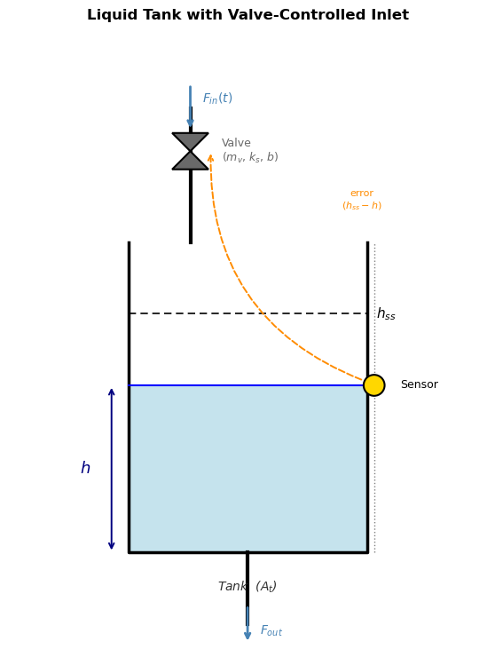
# ── Second-order ODE: damped oscillator ──────────────────────────────────────
def damped_oscillator(t, y, tau, zeta, h_ss):
h, dhdt = y
d2hdt2 = (h_ss - h - 2*zeta*tau*dhdt) / tau**2
return [dhdt, d2hdt2]
tau = 2.0 # time constant (min)
h_ss = 1.0 # steady-state level (m) — step change from h=0
t_eval = np.linspace(0, 20, 400)
y0 = [0.0, 0.0] # starts at rest at h=0, [dh/dt](0)=0, so y0 = [h(0), dh/dt(0)]
fig, ax = plt.subplots(figsize=(8, 4))
for zeta, color, label in [
(0.3, 'tomato', 'Underdamped (ζ=0.3)'),
(1.0, 'steelblue', 'Critically damped (ζ=1.0)'),
(2.0, 'seagreen', 'Overdamped (ζ=2.0)'),
]:
sol = solve_ivp(damped_oscillator, (0, 20), y0,
args=(tau, zeta, h_ss), t_eval=t_eval)
ax.plot(sol.t, sol.y[0], color=color, linewidth=2.5, label=label)
ax.axhline(h_ss, color='gray', linestyle='--', linewidth=1, label='Steady state')
ax.set_xlabel('Time (min)', fontsize=12)
ax.set_ylabel('Tank level h (m)', fontsize=12)
ax.set_title('Second-Order Step Response: Tank Level Dynamics', fontsize=13)
ax.legend(fontsize=10)
ax.grid(True, alpha=0.3)
plt.tight_layout()
plt.show()
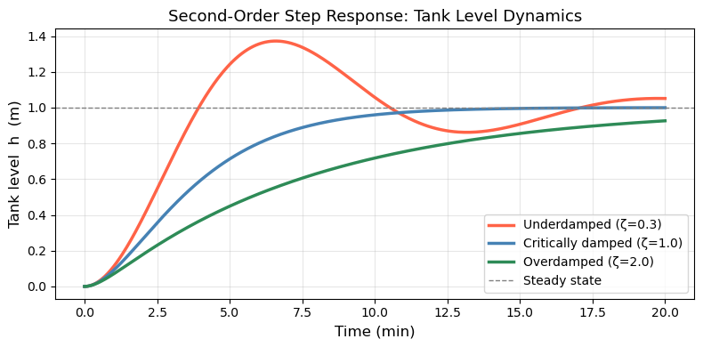
18.5 (Optional) Stiff ODEs#
18.5.1 What is Stiffness?#
A system is stiff when it contains processes operating on vastly different time scales simultaneously. For example, in chemical kinetics:
The first equation has a “fast” term (\(k_1 = 10^6\)) and a “slow” term. To remain stable, an explicit method like RK45 must take tiny steps sized to the fastest time scale — even when the solution is actually changing slowly. This makes RK45 extremely slow (millions of steps) on stiff problems.
Rule of thumb: if RK45 takes a very long time or requires very small steps with no apparent reason, try method='Radau' or method='BDF'.
18.5.2 Stiff Solvers#
Method |
Type |
Best for |
|---|---|---|
|
Explicit, adaptive |
Smooth, non-stiff problems |
|
Explicit, lower order |
Quick/rough solutions |
|
Implicit Runge-Kutta |
Stiff problems |
|
Implicit multi-step |
Stiff problems, large systems |
|
Auto-switching |
When stiffness is uncertain |
Implicit methods solve a system of equations at each step — more work per step, but can take huge steps, so they win on stiff problems.
18.5.3 Example: Fast and Slow Reaction Network#
Consider a reaction network where species \(X\) is produced and consumed very rapidly (a “short-lived intermediate”):
# ── Stiff system: compare RK45 vs Radau ──────────────────────────────────────
import time
k1_s, k2_s, k3_s = 1000.0, 1000.0, 0.01
def stiff_rxn(t, y):
C_A, C_X, C_B = y
dCA = -k1_s * C_A - k3_s * C_A
dCX = k1_s * C_A - k2_s * C_X
dCB = k2_s * C_X + k3_s * C_A
return [dCA, dCX, dCB]
y0_stiff = [1.0, 0.0, 0.0]
t_span = (0, 1.0)
t_eval = np.linspace(0, 1.0, 500)
# RK45
t0 = time.time()
sol_rk45 = solve_ivp(stiff_rxn, t_span, y0_stiff,
method='RK45', t_eval=t_eval, rtol=1e-4, atol=1e-7)
t_rk45 = time.time() - t0
# Radau
t0 = time.time()
sol_radau = solve_ivp(stiff_rxn, t_span, y0_stiff,
method='Radau', t_eval=t_eval, rtol=1e-4, atol=1e-7)
t_radau = time.time() - t0
print(f"RK45 : {sol_rk45.nfev:5d} function evaluations, {t_rk45*1000:.1f} ms")
print(f"Radau: {sol_radau.nfev:5d} function evaluations, {t_radau*1000:.1f} ms")
fig, axes = plt.subplots(1, 2, figsize=(12, 4))
for ax, sol, title in zip(axes, [sol_rk45, sol_radau], ['RK45', 'Radau']):
ax.plot(sol.t, sol.y[0], 'steelblue', linewidth=2, label='$C_A$')
ax.plot(sol.t, sol.y[1], 'darkorange', linewidth=2, label='$C_X$ (fast intermediate)')
ax.plot(sol.t, sol.y[2], 'seagreen', linewidth=2, label='$C_B$')
ax.set_xlabel('Time (s)', fontsize=11)
ax.set_ylabel('Concentration (mol/L)', fontsize=11)
ax.set_title(f'{title} ({sol.nfev} evals)', fontsize=12)
ax.legend(fontsize=9)
ax.grid(True, alpha=0.3)
plt.tight_layout()
plt.show()
RK45 : 2246 function evaluations, 12.6 ms
Radau: 345 function evaluations, 5.2 ms
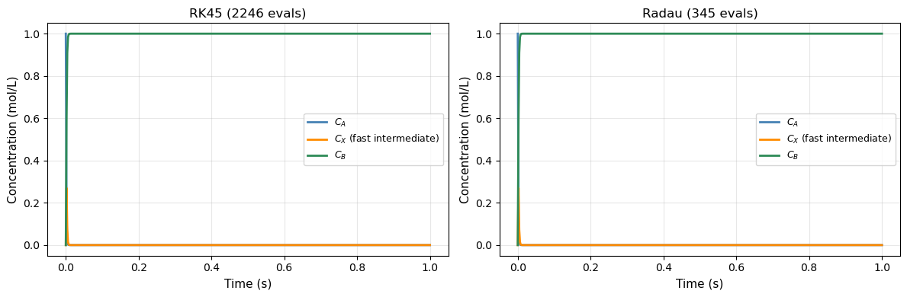
18.6 ChE Application: Non-Isothermal Batch Reactor#
The most important ODE application in ChE is the non-isothermal reactor — where both concentration and temperature evolve together. The temperature affects the rate (Arrhenius), and the reaction releases heat which changes the temperature. These two effects are coupled.
18.6.1 Model Equations#
Consider an exothermic first-order liquid-phase reaction \(A \to B\) in an adiabatic batch reactor:
Mole balance: $\( \frac{dC_A}{dt} = -k(T)\, C_A \)$
Energy balance (adiabatic, liquid phase): $\( \rho C_p \frac{dT}{dt} = (-\Delta H_{rxn})\, k(T)\, C_A \)$
Arrhenius rate: $\( k(T) = A\, e^{-E_a / RT} \)$
The two equations are coupled: temperature changes \(k\), which changes the rate of \(C_A\) consumption, which changes the heat released.
18.6.2 Physical Parameters#
We use parameters typical of an industrial hydrogenation:
Parameter |
Value |
Units |
|---|---|---|
Pre-exponential \(A\) |
\(1.0 \times 10^{10}\) |
min⁻¹ |
Activation energy \(E_a\) |
\(75{,}000\) |
J/mol |
\(-\Delta H_{rxn}\) |
\(50{,}000\) |
J/mol |
\(\rho C_p\) |
\(4{,}000\) |
J/(L·K) |
\(C_{A0}\) |
\(2.0\) |
mol/L |
\(T_0\) |
\(300\) |
K |
# ── Non-isothermal adiabatic batch reactor ───────────────────────────────────
R_gas = 8.314 # J/(mol·K)
A_arr = 1.0e10 # pre-exponential (1/min)
Ea = 75_000.0 # activation energy (J/mol)
dH_rxn = -50_000.0 # heat of reaction (J/mol) — exothermic → negative
rho_Cp = 4_000.0 # volumetric heat capacity (J/(L·K))
C_A0_batch = 2.0 # mol/L
T0_batch = 300.0 # K
def batch_reactor(t, y):
C_A, T = y
k_T = A_arr * np.exp(-Ea / (R_gas * T))
dCA_dt = -k_T * C_A
dT_dt = (-dH_rxn) * k_T * C_A / rho_Cp
return [dCA_dt, dT_dt]
t_eval = np.linspace(0, 30, 600)
sol_batch = solve_ivp(batch_reactor,
t_span=(0, 30),
y0=[C_A0_batch, T0_batch],
method='Radau', # can be stiff near ignition
t_eval=t_eval,
rtol=1e-7, atol=1e-9)
C_A_sol = sol_batch.y[0]
T_sol = sol_batch.y[1]
# Conversion
X_A = (C_A0_batch - C_A_sol) / C_A0_batch
print(f"Final conversion X_A = {X_A[-1]:.4f}")
print(f"Final temperature T = {T_sol[-1]:.2f} K (ΔT = {T_sol[-1]-T0_batch:.2f} K)")
print(f"Adiabatic temp rise (check): {-dH_rxn * C_A0_batch / rho_Cp:.2f} K")
fig, axes = plt.subplots(1, 3, figsize=(14, 4))
# Concentration
axes[0].plot(sol_batch.t, C_A_sol, 'steelblue', linewidth=2.5)
axes[0].set_xlabel('Time (min)', fontsize=12)
axes[0].set_ylabel('$C_A$ (mol/L)', fontsize=12)
axes[0].set_title('Reactant Concentration', fontsize=12)
axes[0].grid(True, alpha=0.3)
# Temperature
axes[1].plot(sol_batch.t, T_sol, 'tomato', linewidth=2.5)
axes[1].axhline(T0_batch, color='gray', linestyle='--', linewidth=1, label='$T_0$')
axes[1].set_xlabel('Time (min)', fontsize=12)
axes[1].set_ylabel('Temperature (K)', fontsize=12)
axes[1].set_title('Reactor Temperature', fontsize=12)
axes[1].legend(fontsize=10)
axes[1].grid(True, alpha=0.3)
# Phase plot: C_A vs T
axes[2].plot(T_sol, C_A_sol, 'seagreen', linewidth=2.5)
axes[2].plot(T0_batch, C_A0_batch, 'ko', markersize=8, label='Start')
axes[2].plot(T_sol[-1], C_A_sol[-1], 'r*', markersize=12, label='End')
axes[2].set_xlabel('Temperature (K)', fontsize=12)
axes[2].set_ylabel('$C_A$ (mol/L)', fontsize=12)
axes[2].set_title('Phase Portrait', fontsize=12)
axes[2].legend(fontsize=10)
axes[2].grid(True, alpha=0.3)
plt.suptitle('Adiabatic Batch Reactor: Coupled Mole & Energy Balances', fontsize=13, y=1.02)
plt.tight_layout()
plt.show()
Final conversion X_A = 0.0267
Final temperature T = 300.67 K (ΔT = 0.67 K)
Adiabatic temp rise (check): 25.00 K
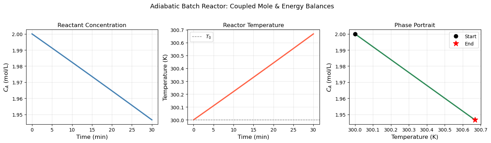
18.6.3 CSTR Start-Up Dynamics#
A continuous stirred tank reactor (CSTR) at start-up must transition from empty (initial conditions) to steady state. The governing equations are:
Mole balance (liquid phase, constant volume \(V\), volumetric flow rate \(Q\)): $\( \frac{dC_A}{dt} = \frac{Q}{V}(C_{A,\text{in}} - C_A) - k(T)\, C_A \)$
Energy balance (with jacket cooling at temperature \(T_c\)): $\( \rho C_p \frac{dT}{dt} = \frac{Q\,\rho C_p}{V}(T_\text{in} - T) + (-\Delta H_{rxn})\,k(T)\,C_A - \frac{UA}{V}(T - T_c) \)$
We want to find:
How long does it take to reach steady state?
Does the reactor settle smoothly or oscillate?
# ── CSTR start-up dynamics ───────────────────────────────────────────────────
# Reactor parameters
Q = 10.0 # L/min — volumetric flow rate
V = 100.0 # L — reactor volume → τ = V/Q = 10 min
CA_in = 2.0 # mol/L — feed concentration
T_in = 300.0 # K — feed temperature
T_c = 290.0 # K — cooling jacket temperature
UA = 2000.0 # J/(min·K)
rho_Cp_cstr = 4000.0 # J/(L·K)
# Kinetics (same Arrhenius as batch)
A_cstr = 1.0e10
Ea_cstr = 75_000.0
dH_cstr = -50_000.0
def cstr_startup(t, y):
C_A, T = y
k_T = A_cstr * np.exp(-Ea_cstr / (R_gas * T))
tau_ = V / Q
dCA_dt = (CA_in - C_A) / tau_ - k_T * C_A
dT_dt = ((T_in - T) / tau_
+ (-dH_cstr) * k_T * C_A / rho_Cp_cstr
- UA * (T - T_c) / (V * rho_Cp_cstr))
return [dCA_dt, dT_dt]
t_eval_cstr = np.linspace(0, 120, 1200)
# Start cold and empty (feed conditions as IC)
sol_cstr = solve_ivp(cstr_startup,
t_span=(0, 120),
y0=[CA_in, T_in], # start with feed filling reactor
method='Radau',
t_eval=t_eval_cstr,
rtol=1e-8, atol=1e-10)
# Approximate steady state (last 5 points average)
CA_ss = np.mean(sol_cstr.y[0, -5:])
T_ss = np.mean(sol_cstr.y[1, -5:])
X_ss = (CA_in - CA_ss) / CA_in
print(f"Steady-state C_A ≈ {CA_ss:.4f} mol/L")
print(f"Steady-state T ≈ {T_ss:.2f} K")
print(f"Steady-state conversion X_A ≈ {X_ss:.4f}")
fig, axes = plt.subplots(1, 2, figsize=(12, 4))
axes[0].plot(sol_cstr.t, sol_cstr.y[0], 'steelblue', linewidth=2.5)
axes[0].axhline(CA_ss, color='gray', linestyle='--', linewidth=1, label=f'SS: {CA_ss:.3f} mol/L')
axes[0].set_xlabel('Time (min)', fontsize=12)
axes[0].set_ylabel('$C_A$ (mol/L)', fontsize=12)
axes[0].set_title('CSTR Start-Up: Concentration', fontsize=12)
axes[0].legend(fontsize=10)
axes[0].grid(True, alpha=0.3)
axes[1].plot(sol_cstr.t, sol_cstr.y[1], 'tomato', linewidth=2.5)
axes[1].axhline(T_ss, color='gray', linestyle='--', linewidth=1, label=f'SS: {T_ss:.1f} K')
axes[1].set_xlabel('Time (min)', fontsize=12)
axes[1].set_ylabel('Temperature (K)', fontsize=12)
axes[1].set_title('CSTR Start-Up: Temperature', fontsize=12)
axes[1].legend(fontsize=10)
axes[1].grid(True, alpha=0.3)
plt.suptitle('Non-Isothermal CSTR Start-Up Dynamics', fontsize=13, y=1.02)
plt.tight_layout()
plt.show()
Steady-state C_A ≈ 1.9832 mol/L
Steady-state T ≈ 299.72 K
Steady-state conversion X_A ≈ 0.0084
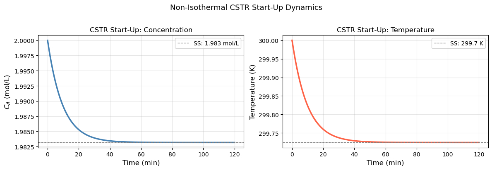
Chapter 18 Summary#
Concept |
Code |
Notes |
|---|---|---|
Define ODE |
|
|
Solve ODE |
|
Default method: |
Save output times |
|
Otherwise solver picks its own points |
Pass parameters |
|
Add params to |
Access solution |
|
Row |
Stiff problem |
|
When RK45 is very slow or takes tiny steps |
Euler’s method |
|
For understanding only — don’t use in practice |
System of ODEs |
|
One IC per equation |
Workflow for any ODE problem:
Identify state variables \(\to\) one entry in
yper variableWrite each \(\frac{dy_i}{dt}\) as a function of
tandyCollect into
def rhs(t, y): return [dy1, dy2, ...]Call
solve_ivp(rhs, (t0, tf), y0, t_eval=...)Check
sol.successand verify physics (mass balance, energy balance)If slow or failing, try
method='Radau'
Key insight: every ODE solver is doing essentially the same thing as Euler’s method — just with smarter, higher-order estimates of the slope at each step. The core idea is always: march forward from the initial condition using the known rate of change.